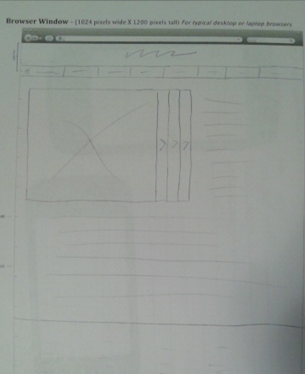
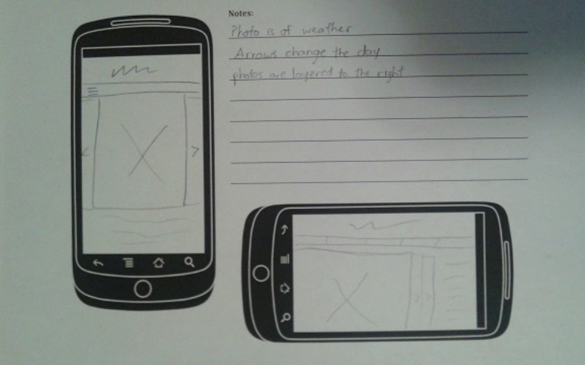
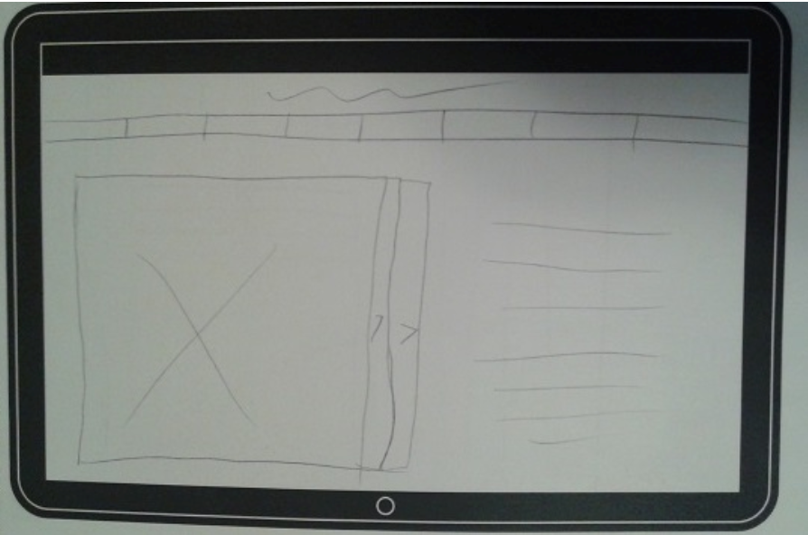
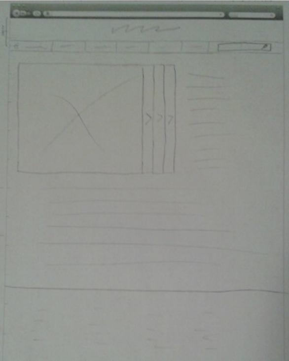
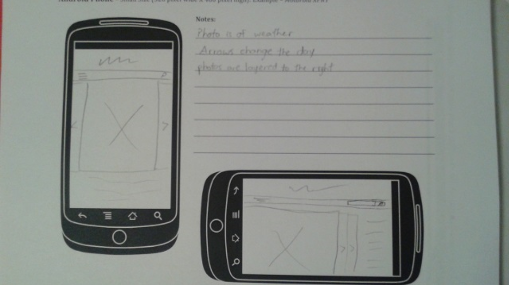
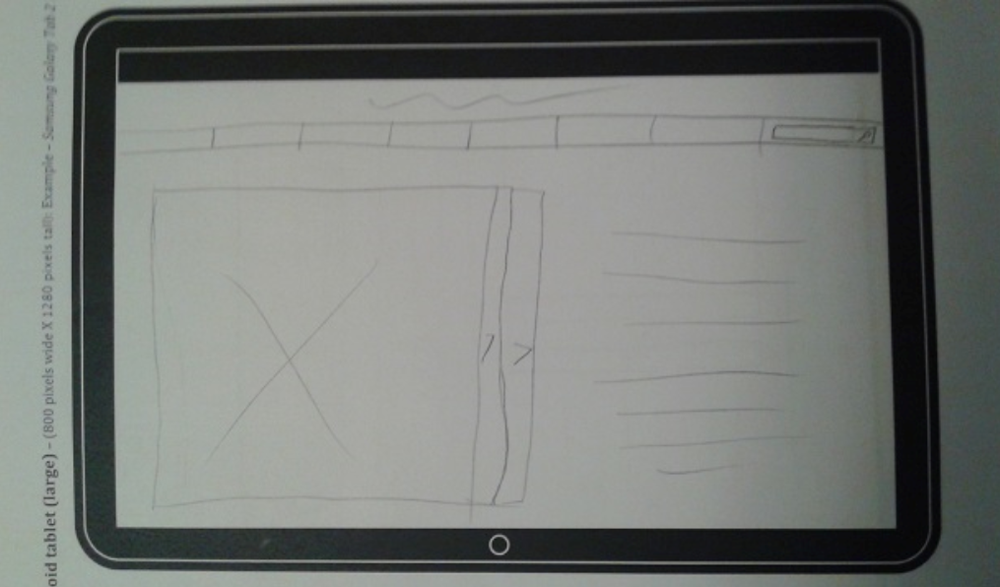

Audience
The target audience of this website is the average man or woman in a town or small city. They will be middle class people of varying education, from a high school degree to a bachelors. This website will be something built for families. It is intended for people who don't have a lot of time, but who need to know their local weather to prepare for their day. That way, they can dress appropriately or plan accordingly.
The user will access this website through any device, but will most likely use it at home. Someone who is checking their phone or computer quickly before leaving for the day will not have an excessive amount of time to spend looking about weather across the nation, so the website will need to keep things relatively simple and straightforward. The website needs to reflect that, keeping the complicated and international things that aren't important to them at the moment kept away from main pages.
Persona
Name: Megan Philmore
Major responsabilites: stay at home mom
Demographic:
- 30 years old
- married
- infant child
- bachelors in elementary education
Goals and tasks: Deeply devoted to family. Spends her day raising her daughter. Money is tight, so she has to take her husband to work. Enjoys taking her daughter on walks or playdates, and often has lunch with her husband.
Environment: Is very comfortable with technology, but doesn't have much time for it. Having an infant means she only has time to use her cell phone for a few minutes at a time to check the internet.
Quote: "Looks like it will be sunny today. It's a perfect day for a play date!"
Initial planning sketches
Web browser example
Smartphone example
Tablet example
I had R.J. Stawinski review my sketches. He liked the layout but suggested that I add a search bar for all three designs and a magnifying glass for the tablet and smartphone modes. He said that otherwise it looked great. A search bar is definitely a good idea, and something I should have thought of initially. I decided imediately to add it to my initial designs. You can see in the following designs that a search bar has been added to each one.
Revised web browser
Revised smartphone
Revised tablet
